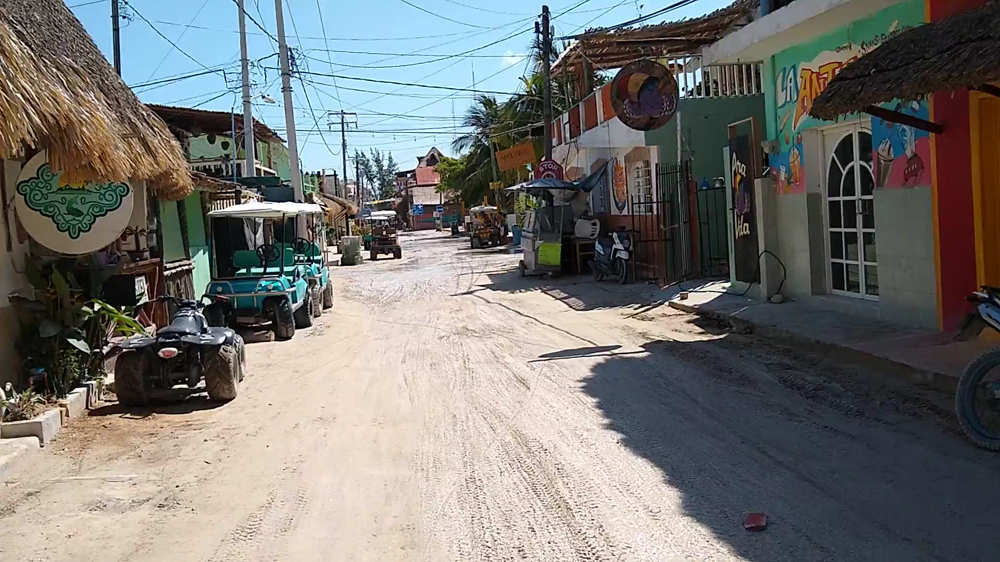
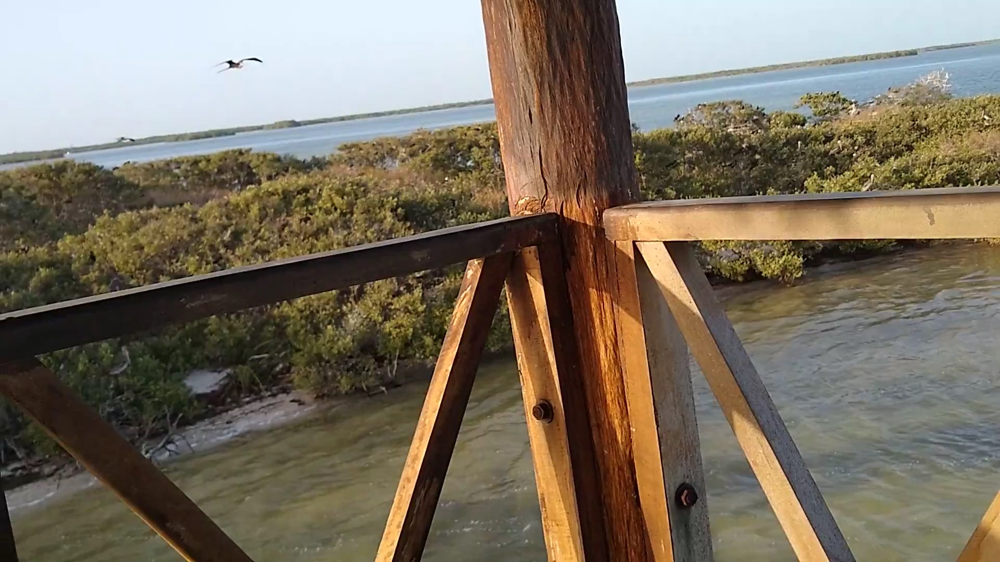
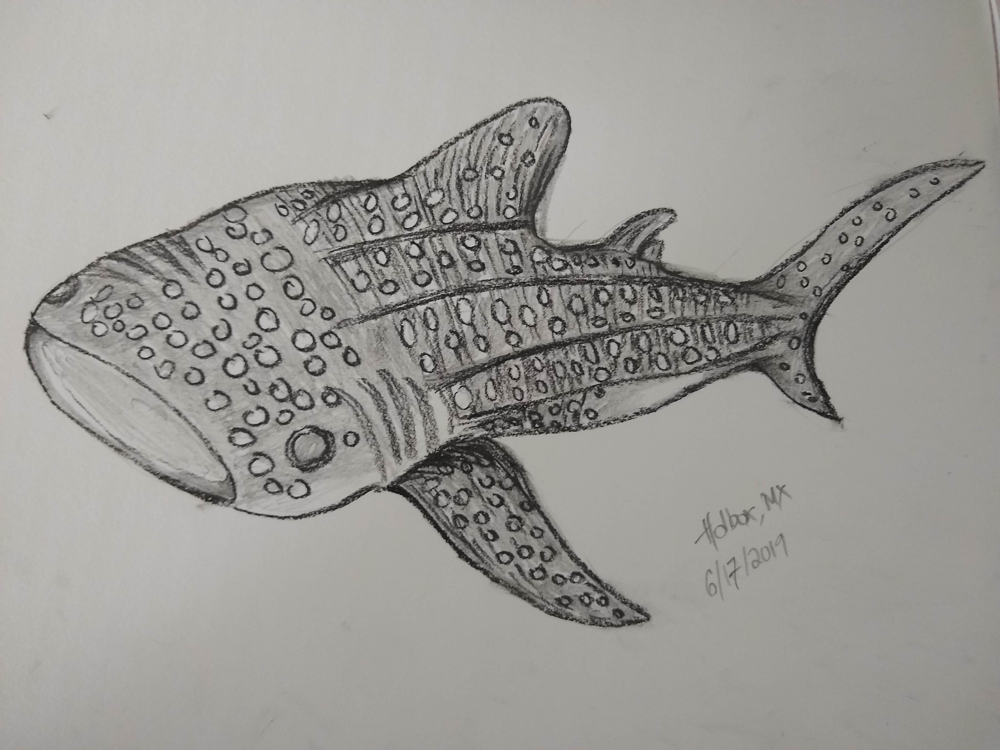

Holbox, Mexico
Jun 12 - 20. Isla Holbox, Quintana Roo, Mexico
Not an easy place to get to. We flew into Cancun, then took a 2 hour shared shuttle ride to Chiquila where we then took a 25 minute ferry ride to Holbox. From the ferry station it was a short golf cart taxi ride to our b&b (no cars allowed on Holbox).
We rented a private boat to take us to Passion Island, Isla Parajos (Bird Island) and saw some flamingos in the distance. It was evening time and there was no other people on Bird Island except us and thousands of birds who were all flying back to rest for the night. So much cackling and squawking.
We also went on a boat tour to snorkel with whale sharks. It was pretty cool to swim above these gentle giants and look them in the eye. Thank goodness dramamine worked for me as it was a long boat ride as we crossed into the Caribbean sea from the Gulf of Mexico and the waters were choppy.
 Taken from our first golf cart taxi ride on Holbox. I remember being so excited to finally reach our b&b
 Bird Island. It was just the two of us in the bird watching tower
 We didn’t have any videos of the whale sharks we swam with so I drew one